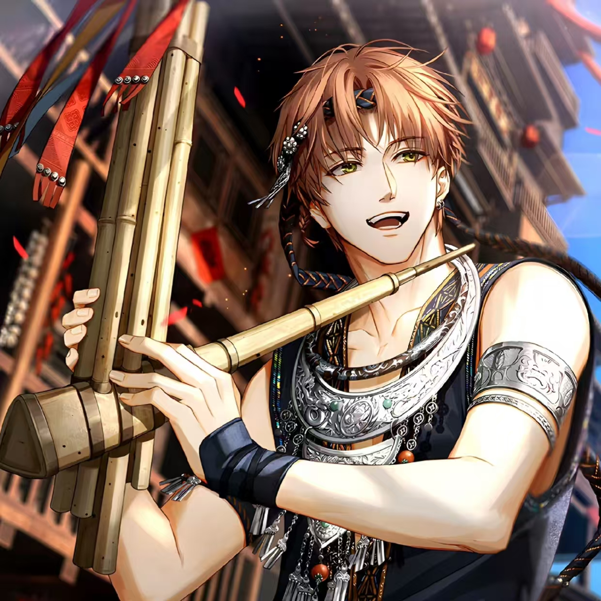
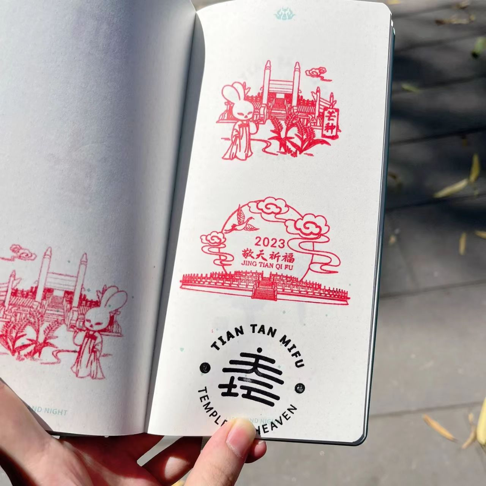
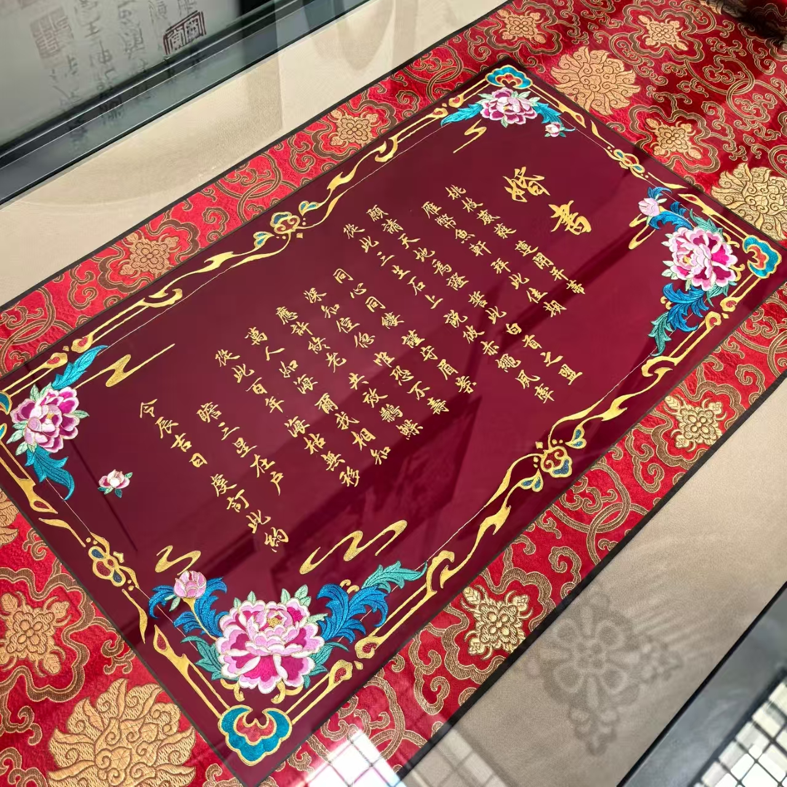
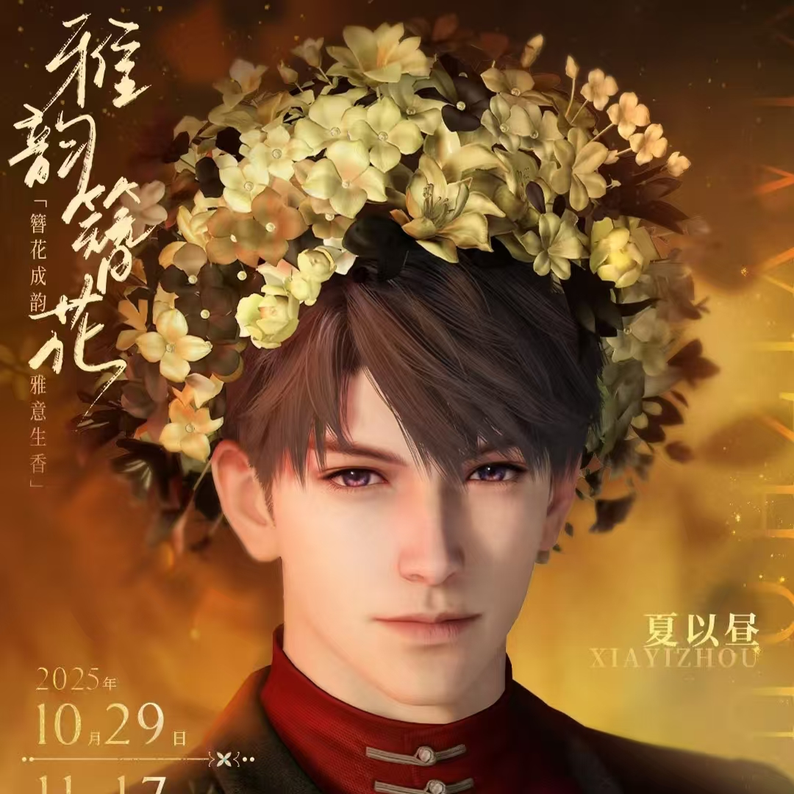
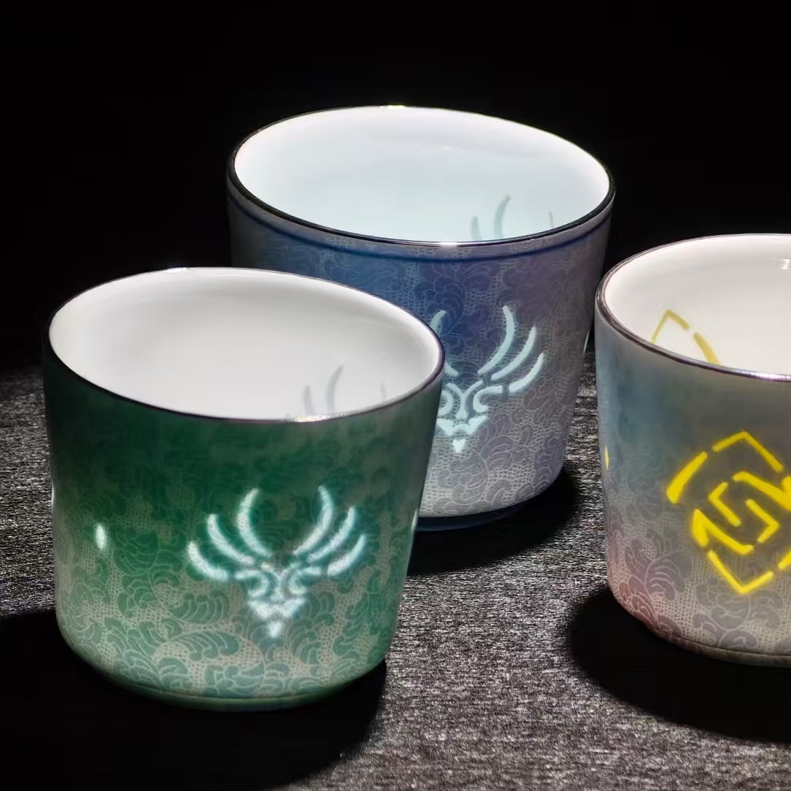
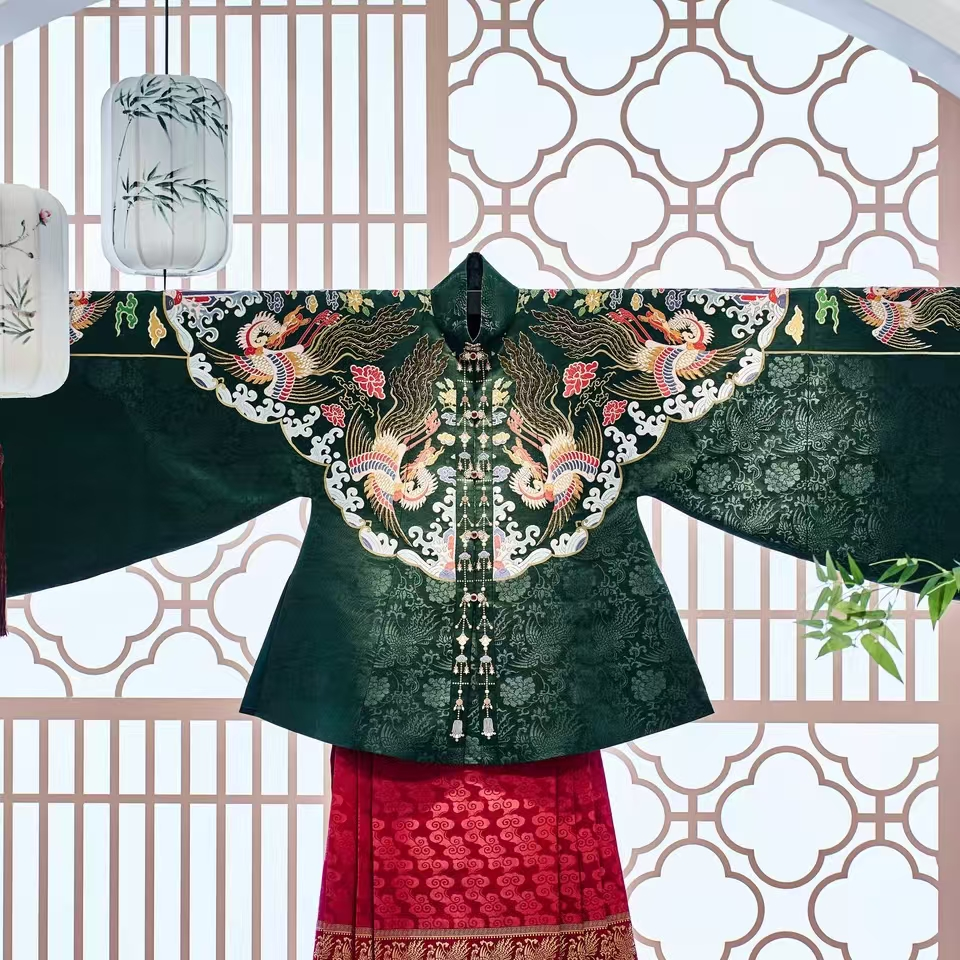

🎮 游戏联动
当非遗遇见虚拟世界 · 游戏IP与非遗的跨界对话
🎮 从《光与夜之恋》到《恋与深空》，从《原神》到《闪耀暖暖》……
🌟 游戏正在用年轻人喜欢的方式，讲述非遗的故事。

齐司礼 × 广西绣球 · 壮族绣球
2024年七夕，《光与夜之恋》与广西文化和旅游厅携手，邀请游戏男主齐司礼担任"清爽一夏·浪漫广西"特邀推荐官。联动以壮族绣球非遗技艺为核心，推出了绣球制作体验、广西文旅纪念文创等系列活动。玩家可以在游戏中感受壮族绣球的精美工艺，也可以在现实中前往广西体验非遗之美。

夏鸣星 × 苗族银饰 · 苗银锻制技艺
2023年夏鸣星生日期间，《光与夜之恋》与少数民族非遗联动，以苗银为核心。夏鸣星的生日卡面融入苗族银饰元素，游戏剧情结合了苗族银饰的锻造技艺和文化内涵。联动还同步推出了土家织锦、水族水书、侗族蓝靛靛染等多个少数民族非遗项目。

齐司礼 × 故宫以东 · 京绣·景泰蓝·汝瓷
2022年齐司礼生日，《光与夜之恋》与北京东城区文旅品牌"故宫以东"跨界联动。玩家跟随齐司礼漫步北京东城古迹，感受景泰蓝、京绣、泰山皮影、汝瓷、北京玉雕等国家级非遗项目。这些非遗大师作品影像随后参展了法国巴黎卢浮宫卡鲁塞尔厅的全球当代艺术博览会。

光与夜之恋 × 苏州丝绸博物馆 · 苏绣婚书
2025年8月，《光与夜之恋》"灼灼金帐栖"活动邀请中国工艺美术大师、苏绣非遗传承人邹英姿为游戏定制非遗婚书刺绣。将苏绣婚书这一传统婚俗元素融入游戏剧情，让玩家在虚拟婚礼中感受苏绣的典雅与庄重。

恋与深空 × 泉州蟳埔 · 簪花围
《恋与深空》与泉州蟳埔簪花非遗传承人合作，将泉州簪花围这一国家级非遗融入游戏角色造型。游戏内推出了簪花主题角色装扮，玩家可为角色佩戴精美的簪花头饰。游戏外同步推出簪花非遗纪录片，记录传承人黄丽泳老师的故事，让玩家在游戏内外都能感受簪花文化的魅力。

原神 × 徽墨·龙泉青瓷·苏绣·木版年画
《原神》长期致力于非遗文化的传播，先后与徽墨、龙泉青瓷、苏绣、木版年画等多个非遗项目合作。游戏通过角色设计、场景美术、周边产品等方式，将非遗元素融入游戏世界。以"海灯节"为背景的璃月地区场景，大量参考了中国传统建筑和民俗文化，在海内外玩家中产生了深远影响。

闪耀暖暖 × 南京云锦 · 皇室织造技艺
《闪耀暖暖》与南京云锦非遗传承人合作，将云锦"寸锦寸金"的织造技艺融入游戏服装设计。游戏内推出云锦主题套装，以云锦经典的龙凤纹、花卉纹为灵感，结合游戏精致的3D建模，让玩家近距离感受云锦的华美与精湛。联动还推出了云锦科普内容，介绍云锦的织造工序和历史渊源。